<meta charset="utf-8">
<meta name="viewport" content="width=device-width, initial-scale=1">
<meta name="robots" content="noindex">
<title>Kimbark: A German Village to a Chicago Fortune</title>
<link rel="stylesheet" href="style.css">

<nav>
  <a href="index.html">Home</a>
  <a href="quintanilla.html">Quintanilla</a>
  <a href="martinez.html">Martinez</a>
  <a href="flynn.html">Flynn</a>
  <a href="maccoll.html">MacColl</a>
  <a class="here" href="kimbark.html">Kimbark</a>
</nav>

<main>
<h1>Kimbark</h1>
<p class="sub">The American family that married into the MacColls. It starts with a man in a German hill village asking a prince for permission to leave, and ends with my great-grandmother on a hospital board in Providence. In between: a farm, an orphan, a war, and the man who invented daylight saving time in America.</p>

<p>This is not one of my four grandparents' lines. It comes in sideways, through one marriage: <strong>Mary Kimbark of Evanston, Illinois married Norman MacColl of Providence in June 1924</strong>, and their daughter Joan is my grandmother. But it turned out to be the deepest and best-documented thing on the whole tree, so it gets its own page.</p>

<figure>
  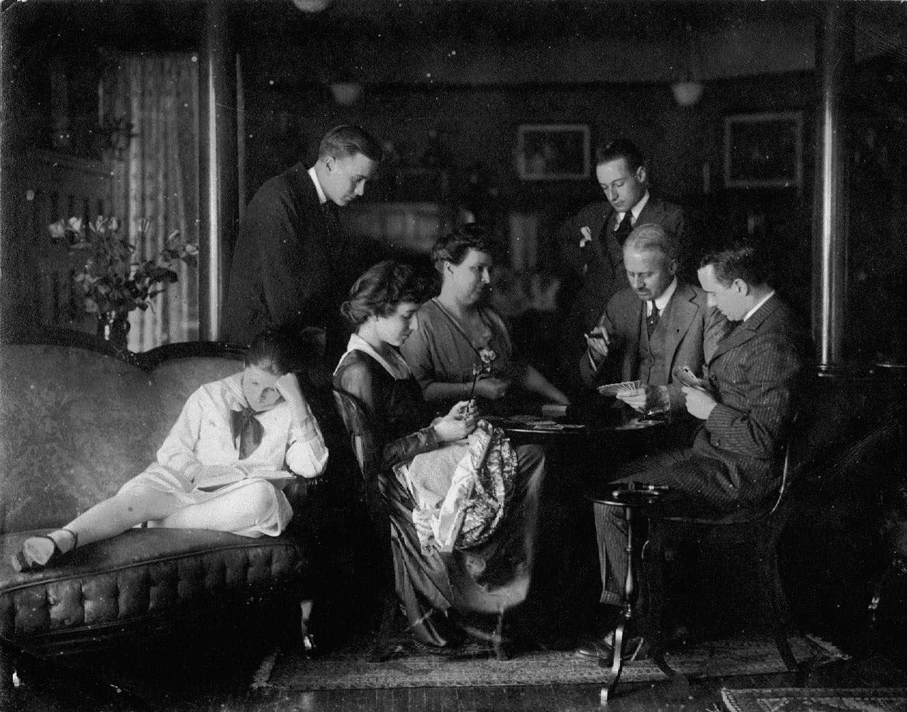
  <figcaption>All seven of them, at home, about 1916 <span class="badge probable">Probable</span> date. This is the only known photograph of the family together. Left to right: <strong>Mary</strong>, about thirteen, sprawled asleep across the chaise (my great-grandmother); one of her brothers standing behind; her sister <strong>Louise</strong> sewing; their mother <strong>Louise Rice Kimbark</strong> seated behind her; a second brother standing; <strong>Eugene Underwood Kimbark</strong> at the card table holding a fan of cards; and <strong>Harry</strong>, the eldest, opposite him. The sixth child, Eugene Jr., is not in the picture — and he is not in any family picture. From the Ancestry tree of a MacColl descendant.</figcaption>
</figure>

<h2>1. A German village, and a man who asked permission to leave</h2>

<p>It starts in <strong>Stein, in Amt Beilstein</strong>, in the Westerwald — the hill country east of the Rhine. Thin soil, small farms, a prince who owned everything. <strong>David Gimberg</strong> lived there in the late 1600s. His son <strong>Johann Theiss Gimberg</strong> married at <strong>Neuwied on 27 September 1719</strong>, and in the spring of <strong>1726</strong> filed a formal petition with the Prince of Wied asking for leave to emigrate to America <span class="badge proven">Proven</span>.</p>

<p>You couldn't just go. You had to ask, and pay, and be let out. His actual petition is still in the Neuwied archive, and the church registers behind this family run back to 1667.</p>

<p>He got out. By 1726&ndash;29 he was on <strong>Quassaick Creek</strong> — the German settlement up the Hudson that became Newburgh, New York — and by 1738 he was on the rolls of the Ulster County militia.</p>

<p>And here is the thing that made this line so hard to trace for a century: <strong>the name he arrived with was Gimberg.</strong> Everything after that is one German name being chewed up by English-speaking clerks. Over four generations it is spelled <em>Gimberg, Kimberg, Kimbergh, Kimpergh, Kimberk, Kimback</em> — and finally <strong>Kimbark</strong>. If you only search for "Kimbark" you find nothing before about 1820, which is exactly why everyone before me hit a wall.</p>

<h2>2. Forty years later, they owned 230 acres</h2>

<p>One generation in, they were not poor immigrants any more. On <strong>25 November 1769</strong>, <strong>Matthias Kimbergh, "farmer of the Wall Kill,"</strong> bought from <strong>Ann Chambers of the City of New York, widow</strong>, the north-west end of Lot 11 in one of the great colonial land grants — <strong>230 acres, for £274 and 8 shillings</strong> <span class="badge proven">Proven</span>. I read the deed.</p>

<p>That is the whole immigrant story in forty years: petition a German prince for permission to leave, then buy a working farm off a New York patentee's widow. This was some of the best bottomland in the Hudson Valley.</p>

<p>They married into the other German and Dutch families along the Wallkill — Millspaughs, Bodines, Crists, Sinsabaughs, Wellers, Michels — and baptised their children at the <strong>Brick Church at Montgomery</strong>. There are <strong>twenty-two Kimbergh baptisms in that register between 1778 and 1803</strong>, under at least five different Kimbergh fathers. This was a clan, not a family.</p>

<p>They weren't all steady, either. <strong>George Kimberg Senior</strong> — almost certainly the Georg Wilhelm who joined the Montgomery church in 1755 and served in the 4th Ulster Regiment — turns up in <strong>1786 as an insolvent debtor before the New York Assembly</strong> <span class="badge probable">Probable</span>. He went broke.</p>

<h2>3. The orphan of Shawangunk</h2>

<p>This is the best document in the whole project, and I found it in September 2026, sitting unindexed in a pile of loose court papers that had not been read in two hundred years.</p>

<p><strong>George Kimberg Junior</strong> married <strong>Mary Michels</strong> and had five children. Then he <strong>died, sometime between February 1806 and March 1807</strong> — his youngest son was born after his death. His widow later remarried <span class="badge probable">Probable</span>.</p>

<p>One of those children was <strong>Adam C. Kimbergh, born 10 October 1798</strong>. He was <strong>eight years old</strong> when his father died.</p>

<p>Ten years after that, this happened:</p>

<figure>
  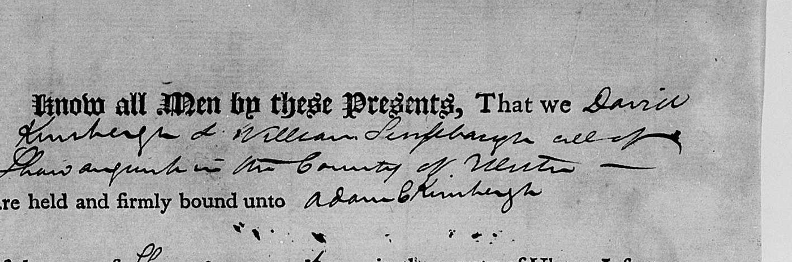
  <figcaption><strong>Ulster County Surrogate's Court, 4 November 1816</strong> <span class="badge proven">Proven</span>. A printed bond form with the names written in by hand: <em>"Know all Men by these Presents, That we <strong>David Kimbergh &amp; William Sinsebaugh</strong> all of <strong>Shawangunk</strong> in the County of <strong>Ulster</strong> — are held and firmly bound unto <strong>Adam C. Kimbergh</strong>…"</em></figcaption>
</figure>

<p>The rest of the bond says he was <strong>"an infant under the age of twenty-one years,"</strong> and that David Kimbergh had that day been <strong>appointed his guardian</strong>, under a New York act of 1809 that let an orphan over fourteen go to court and choose who would look after him. The bond is for <strong>$250</strong>.</p>

<p>And the petition he filed to start it survives too — or rather, a corner of it does:</p>

<figure>
  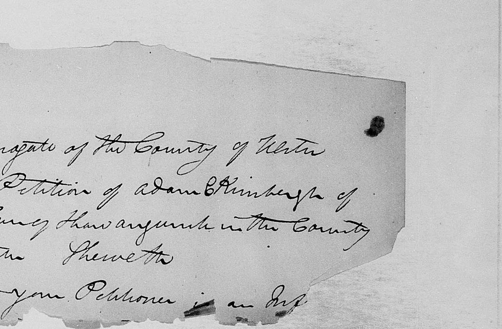
  <figcaption><em>"To the Sur[ro]gate of the County of Ulster / The Petition of <strong>ADAM C. KIMBERGH</strong> of / [the To]wn <strong>Shawangunk</strong> in the County / [of Uls]ter — <strong>Sheweth</strong> / [That] your Petitioner is an Inf—"</em> and then the paper is torn away. The rest of the sheet, which named his dead father and his inheritance, <strong>is physically gone.</strong> Five lines survive.</figcaption>
</figure>

<figure>
  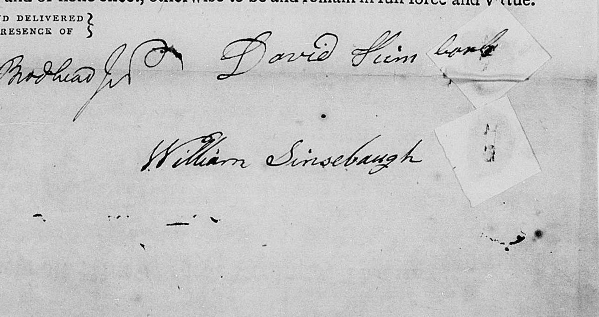
  <figcaption>Signed and sealed. <strong>David Kimbergh</strong> and <strong>William Sinsebaugh</strong>, both with their red wax seals still stuck to the paper after two hundred and ten years, witnessed by a Brodhead. Note that David signed his own name in a fluent hand — he could write, which in that county in 1816 says something.</figcaption>
</figure>

<h3>Why three scraps of paper matter this much</h3>

<p><strong>It proves the name.</strong> Until this turned up, the German origin was an argument: church books from the 1700s, a Palatine genealogy, and a published article that graded the connection as merely "proposed." Now there is a court record, in his own lifetime, in his own county, where the man himself is written down as <strong>Adam C. <em>Kimbergh</em></strong>. Gimberg to Kimbergh to Kimbark now runs through one named human being <span class="badge proven">Proven</span>.</p>

<p><strong>It proves he was an orphan.</strong> A surrogate only appoints a guardian when the father is dead. So Adam's father was dead before November 1816 — which independently backs up George Kimberg Jr., who died in 1806/07.</p>

<p><strong>The dates fit to the day.</strong> Born 10 October 1798, he was <strong>eighteen years and twenty-five days old</strong> on 4 November 1816. Exactly the procedure, exactly the age.</p>

<p><strong>And he had money.</strong> You don't post a $250 bond over nothing. He had inherited something worth protecting, and that inheritance is why an eighteen-year-old was standing in a courthouse in Kingston in the first place.</p>

<p>Two years later, on <strong>10 December 1818</strong>, in the same town, he married <strong>Sarah Masten</strong>. Her brother thought so much of him that he named his own son <strong>Adam C. Kimbark Masten</strong> within weeks of the wedding.</p>

<p>That is the exact seam. <strong>He was born a Kimbergh and he died a Kimbark.</strong></p>

<h2>4. Going west, one county at a time</h2>

<p>Adam and Sarah had <strong>eleven children</strong> and never sat still. Scipio, in Cayuga County, by 1823. Livingston County by 1839. Then Auburn. Then Rochester, where he died on <strong>16 April 1867</strong>. Farmer, then merchant, then hotel-keeper — a man who kept trying things.</p>

<p>Their first child, <strong>Henry</strong>, died as a baby in 1821. Sarah outlived Adam by <strong>twenty-six years</strong>, dying in 1893 at ninety-one, back near her own brothers in Cayuga County <span class="badge proven">Proven</span>.</p>

<p>The sons went to <strong>Chicago</strong>. That is where the money is made.</p>

<h2>5. Chicago: three brothers, a war, and a flag</h2>

<p><strong>Seneca D. Kimbark</strong> (1832&ndash;1912) built a large iron and carriage-hardware house and became rich.</p>

<p><strong>George M. Kimbark</strong> did something extraordinary. In 1862, <strong>at his own expense, he raised, equipped and flagged an entire infantry company</strong> — the <strong>Kimbark Guards, Company C, 88th Illinois</strong>, in Sheridan's division <span class="badge proven">Proven</span>. Perryville, Stones River, Chickamauga, Missionary Ridge, Kennesaw Mountain. Their flag had <em>"God is with us"</em> on it in gold thread; by the Sanitary Fair of 1863 it "has many bullet holes through its folds." <strong>The regiment left Chicago with 900 men and came home with 209.</strong> The survivors gave George his flag back after the war.</p>

<p>In the second week of April 1865, <strong>Seneca rode into Richmond</strong> — the week the city fell, Lee surrendered, and Lincoln was shot — on a Sanitary Commission errand for the Chicago Board of Trade.</p>

<p>Their brother <strong>Daniel Avery Kimbark</strong> (1837&ndash;1886) was the quiet one: a partner in Kimbark Bros. &amp; Co., and secretary-treasurer of the Musical Union of Chicago. His obituary remembers his <em>"rich baritone voice."</em> He married <strong>Eliza Underwood</strong> of Auburn, New York in 1861 and died in 1886, aged 48. He is my 3&times;-great-grandfather.</p>

<p>One honest note, because the family story got prettier than the record. The hardware house <strong>collapsed into receivership in April 1904</strong>; the polite biographies say only that Seneca "retired." And when he died in 1912 the <em>Tribune</em> gave him <strong>four sentences</strong>. The money did not last.</p>

<h2>6. Eugene, and the hour he moved</h2>

<figure>
  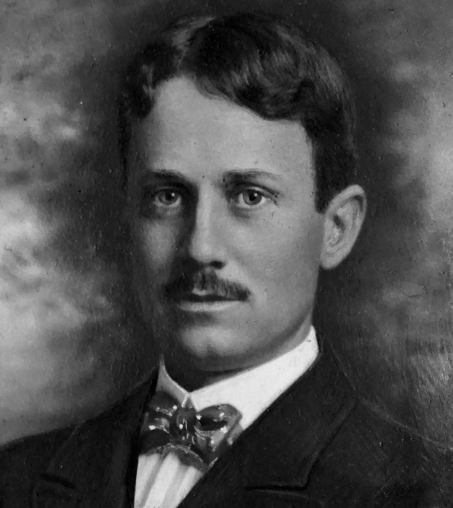
  <figcaption><strong>Eugene Underwood Kimbark</strong> (1867&ndash;1923), my great-great-grandfather, as a young man, probably around the time he married. A retouched studio enlargement kept in the family. Until this project there was no known photograph of him at all.</figcaption>
</figure>

<p>Daniel's son <strong>Eugene Underwood Kimbark</strong>, born in Chicago on 13 March 1867, is where the family peaks.</p>

<p>Wholesale paper merchant. Founder and manager of <strong>The Paper Mills Co.</strong> from 1894. <strong>President of the Chicago Association of Commerce in 1912</strong>. President of the National Paper Trade Association. Union League Club. President of the Evanston Club.</p>

<p>And this, which the family always claimed and which I fully expected to be a nice story that fell apart: <strong>he really is the father of daylight saving time in America</strong> <span class="badge proven">Proven</span>.</p>

<p>He chaired the Chicago Association of Commerce's <strong>Special Committee on Change of Time</strong>, and its <strong>report of 11 December 1914</strong> is the document that put the idea into Congress. That is not the family talking — that's the standard academic history of timekeeping, Ian Bartky's <em>One Time Fits All</em> (Stanford University Press, 2007), which names him, credits the report with the 1916 Congressional resolutions, and uses the committee's own sentence as a chapter epigraph. The report was reprinted in the <strong>1917 US Senate hearings</strong>, which is where the family tradition that "he went to Washington several times" actually comes from.</p>

<p>Here he is in his own voice, to the Associated Press, four days before the report went out:</p>

<blockquote>
<p>"We merely want to give citizens more daylight in which to work and recreate. It is not a question for Chicago alone to decide, as the change would have to be made all over the territory east of the Mississippi. What we want to do is to get more daylight in the average day."</p>
<p class="sub" style="margin:8px 0 0">&mdash; E. U. Kimbark, 7 December 1914</p>
</blockquote>

<p>The report itself notes, drily, that some Chicago newspapers had covered the proposal <em>"not seriously."</em> He was being laughed at in 1914 for something the entire country adopted in 1918.</p>

<p>Two things worth knowing. First, he wasn't proposing what we have now — he wanted a <strong>permanent</strong> one-hour move, not clocks going back and forth. Second, he lost the first round: the US Chamber of Commerce did nothing with the report and it "was allowed to rest" for two years before the war revived it.</p>

<p>One family claim does <em>not</em> survive: that he first proposed the lakefront stadium that became Soldier Field. That appears only in his own eulogy, and the documented history of that stadium runs through the city and the park commissioners <span class="badge lore">Family story</span>. I've left it off.</p>

<h2>7. The Sunday in February</h2>

<figure>
  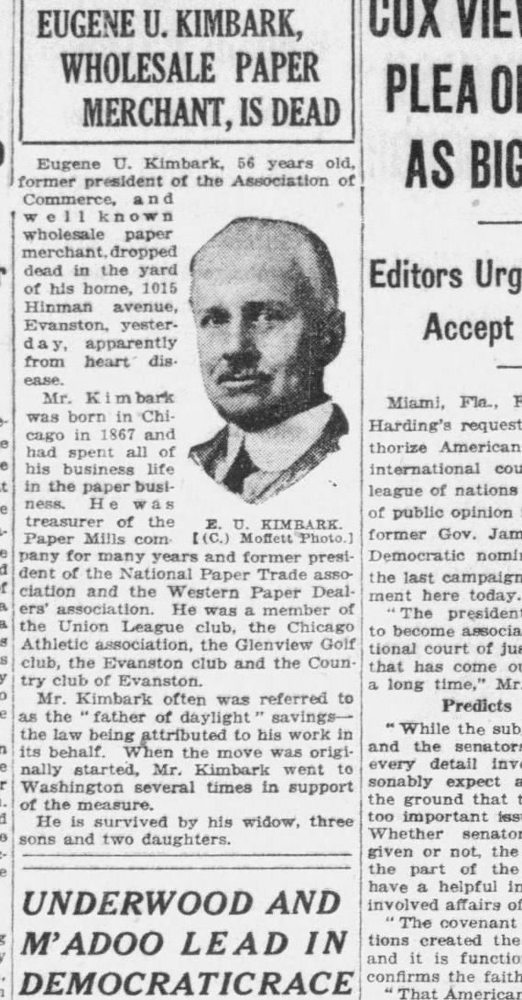
  <figcaption><em>Chicago Tribune</em>, 26 February 1923 <span class="badge proven">Proven</span>.</figcaption>
</figure>

<p>On Sunday <strong>25 February 1923</strong>, Eugene Underwood Kimbark <strong>dropped dead in his own front yard</strong> at 1015 Hinman Avenue, Evanston. Heart disease. He was fifty-five. He is buried at <strong>Graceland Cemetery</strong> in Chicago, Section B, Lot 479, with his wife, his parents, and his uncle Seneca.</p>

<p>That is sixteen months before his youngest daughter's wedding — which is the small, sad reason that every notice of Mary's 1924 marriage says <em>"daughter of Mrs. Eugene U. Kimbark"</em> and never <em>"Mr. and Mrs."</em> I noticed the missing word before I knew why it was missing.</p>

<figure>
  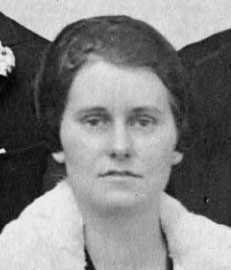
  <figcaption><strong>Louise Rice Kimbark</strong> (1867&ndash;1942), born in Milwaukee, married Eugene in January 1890, and outlived him by nineteen years. It is through her, and her Rice family, that the older colonial American lines come into this family at all.</figcaption>
</figure>

<h2>8. The six children</h2>

<p>Eugene and Louise had six. I found all six, and the sixth took the longest — because "the missing sibling" everyone was looking for turned out to be <strong>Mary herself</strong>, hiding in plain sight in her married name.</p>

<div class="tablewrap">
<table>
<tr><th>Child</th><th>Years</th><th>What happened</th></tr>
<tr><td><strong>Harry Rice</strong></td><td>1890&ndash;1957</td><td>Retired general partner of a New York stockbroking house. Died at home on Cape Cod.</td></tr>
<tr><td><strong>Donald Rice</strong></td><td>1892&ndash;1968</td><td>A salesman for a paper company. Died in the James C. King Home for aged men in Evanston. The saddest ending in the family.</td></tr>
<tr><td><strong>Eugene U. Jr.</strong></td><td>1894/5&ndash;1937</td><td>Died in a township in Lee County, Illinois, occupation recorded as "none." He appears in <em>no</em> family notice, no photograph, no obituary. Almost certainly institutionalised, though no record I found says so.</td></tr>
<tr><td><strong>Louise</strong></td><td>1895&ndash;1981</td><td>Married James R. MacColl Jr. of Providence in 1917. Mother of the Portland historian E. Kimbark MacColl.</td></tr>
<tr><td><strong>John Rice</strong></td><td>1898&ndash;1972</td><td>Princeton 1920, banker, alderman for nineteen years, and <strong>Mayor of Evanston 1953&ndash;62</strong>. Evanston adopted the council-manager form of government under him.</td></tr>
<tr><td><strong>Mary</strong></td><td>1903&ndash;1969</td><td>My great-grandmother. Married Norman MacColl and went east.</td></tr>
</table>
</div>

<h2>9. Two sisters married two brothers</h2>

<p>This is the strangest fact on the page, and it is fully documented.</p>

<figure>
  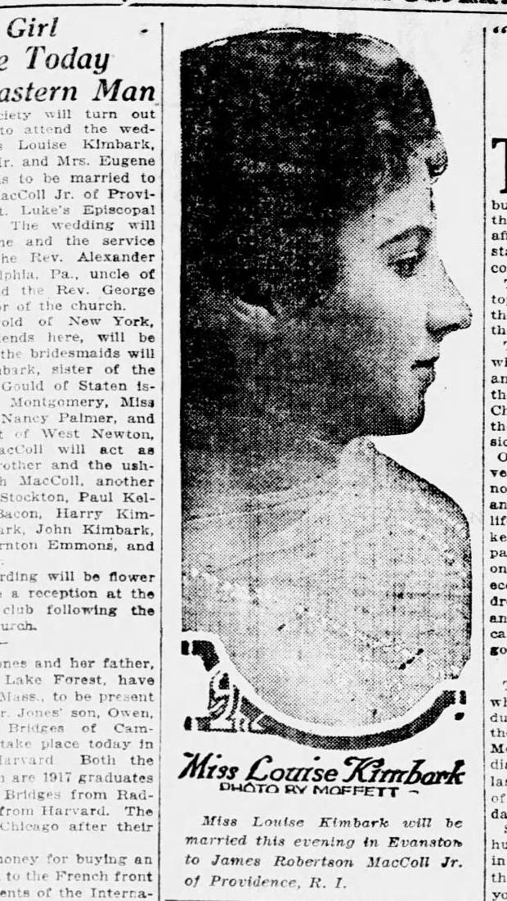
  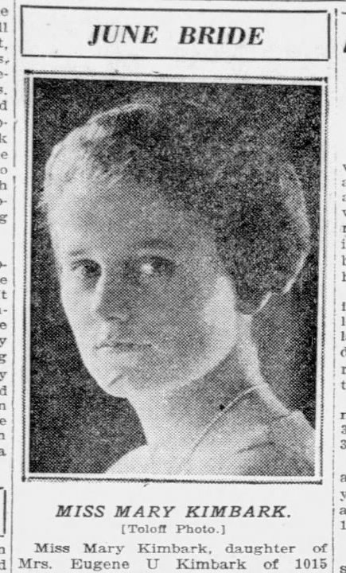
  <figcaption>Two Kimbark sisters, seven years apart, in the same newspaper. Left: <strong>Louise Kimbark</strong>, <em>Chicago Tribune</em>, 25 June 1917, the morning of her wedding — "will be married this evening in Evanston to James Robertson MacColl Jr. of Providence, R. I." Right: <strong>Mary Kimbark</strong> under the headline "JUNE BRIDE," <em>Tribune</em>, 20 June 1924, aged twenty. Both public domain.</figcaption>
</figure>

<p><strong>Louise</strong> married <strong>James Robertson MacColl Jr.</strong> at St Luke's, Evanston, on <strong>25 June 1917</strong>.<br>
<strong>Mary</strong> married <strong>Norman A. MacColl</strong> at the same church on <strong>23 June 1924</strong> — two days short of the seventh anniversary, with <strong>the same two clergymen officiating</strong>.</p>

<p>Both newspaper announcements describe the groom in identical words: <em>"son of Mr. and Mrs. James R. MacColl of Providence, R. I."</em> They were brothers <span class="badge proven">Proven</span>.</p>

<p>The 1924 wedding party makes it plain. The <strong>best man was James R. MacColl Jr.</strong> — the groom's brother, and already the bride's brother-in-law. The <strong>matron of honour was Mrs. James R. MacColl Jr.</strong> — that is <strong>Louise</strong>, the bride's own sister. The <strong>flower girl</strong> was Louise's small daughter, who was simultaneously niece to the bride and niece to the groom. And the man who performed the service was the <strong>Rev. Alexander MacColl of Philadelphia</strong>, the grooms' uncle.</p>

<p>One consequence is genuinely unusual: my grandmother <strong>Joan MacColl</strong> and the Portland historian <strong>E. Kimbark MacColl</strong> were <strong>double first cousins</strong> — they shared <em>both</em> sets of grandparents, Kimbark and MacColl. Genetically that is about the same overlap as half-siblings.</p>

<p>It also created a mess in the record that fooled the <em>Tribune</em> itself: John Kimbark's 1972 obituary lists a surviving <em>"sister, Mrs. Mary MacColl"</em> — but Mary had died in 1969. The paper had mixed up the two Kimbark sisters who married the two MacColl brothers. Easy to do. Both were "Mrs. MacColl of Providence."</p>

<h2>10. Mary, in Providence</h2>

<p><strong>Mary Kimbark MacColl</strong> lived in Providence for <strong>forty-four years</strong>, at 295 Laurel Avenue, and summered at Wianno on Cape Cod.</p>

<p>What she actually did, from her obituary: trustee and past president of the board of lady visitors of the <strong>Providence Lying-In Hospital</strong>; the Junior League; the Colonial Dames; the Providence Art Club; Grace Church; past treasurer of the Stephen Hopkins House Committee; and, during the Second World War, <strong>vice chairman of the motor services division of the American Red Cross in Providence</strong> <span class="badge proven">Proven</span>.</p>

<p>She died on <strong>7 March 1969</strong>. The memorial service was at Swan Point Chapel, and the family asked for gifts to the Lying-In Hospital instead of flowers.</p>

<p>Her Providence obituary was, for most of this project, the one thing I could not get — Rhode Island newspapers are not in any of the big databases. It finally turned up as a <strong>scan a cousin had pasted into a family tree online</strong>, which is a lesson in itself. It names <em>"Mrs. Donald W. Flynn of East Greenwich"</em> — my grandmother Joan — among her three daughters, and counts eighteen grandchildren.</p>

<figure>
  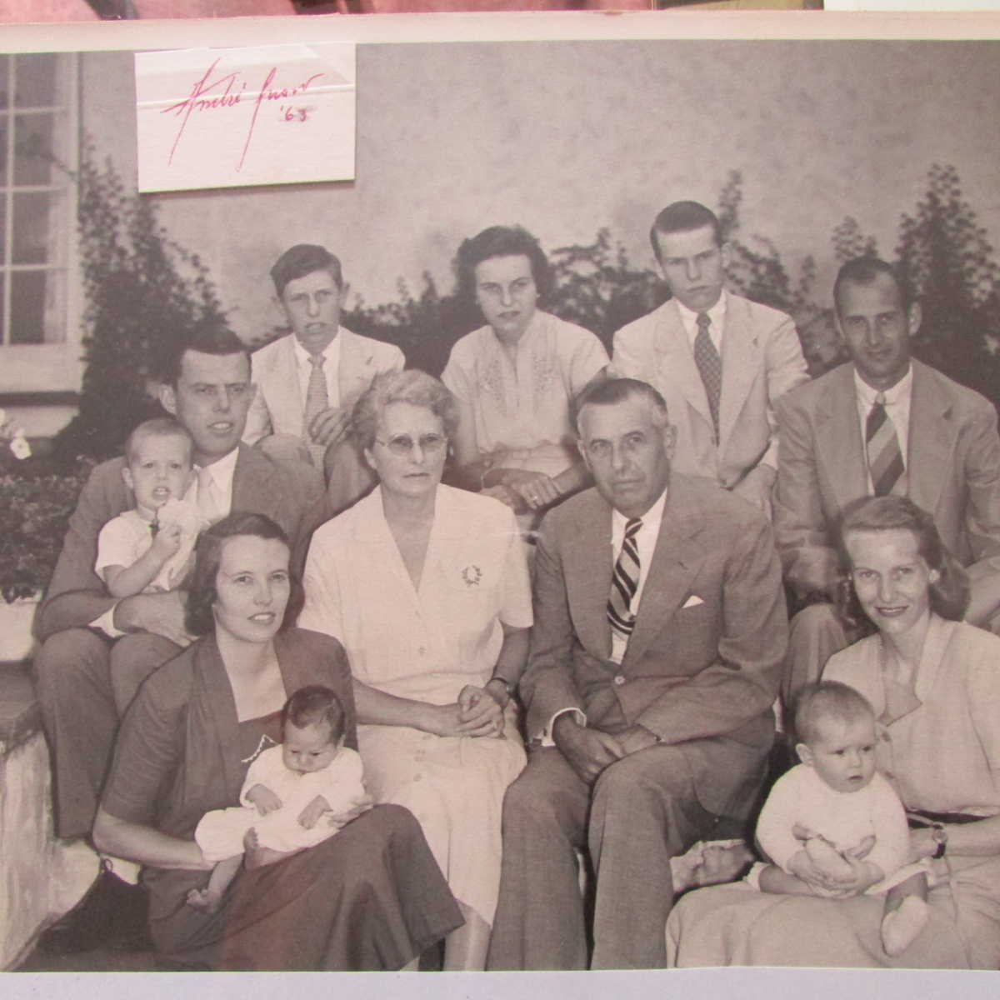
  <figcaption>The whole family, outside the house, early 1950s <span class="badge probable">Probable</span>. The couple seated at the centre are almost certainly <strong>Mary Kimbark MacColl</strong>, in white with glasses, and <strong>Norman MacColl</strong>. Around them: their grown children, their children's husbands and wives, and three babies. My grandmother Joan is very likely one of the young women. The photographer's slip is still stuck to the corner. If you are family and can put names to these faces, I want to hear from you.</figcaption>
</figure>

<h2>11. And yes, that is the Kimbark Avenue</h2>

<figure>
  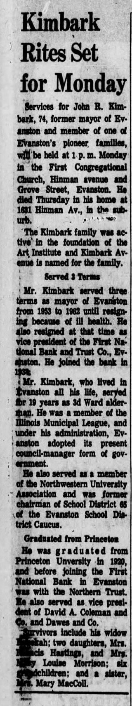
  <figcaption><em>Chicago Tribune</em>, 26 August 1972 — the paper stating flatly that <strong>Kimbark Avenue in Hyde Park is named for this family</strong> <span class="badge proven">Proven</span>.</figcaption>
</figure>

<p>Which Kimbark is a live argument. Every guidebook says <strong>Seneca</strong>, because he lived longest and was richest. But the case for his brother <strong>George M.</strong> is better: George married Elizabeth Gray, who was <strong>Paul Cornell's sister-in-law</strong> — Cornell being the man who founded Hyde Park; George owned land in the subdivision the street runs through; he was in the founding group of the South Park system; and <strong>Paul Cornell named one of his sons "George Kimbark Cornell."</strong> That last one is hard to explain any other way. I grade it <strong>George M.</strong> <span class="badge probable">Probable</span>.</p>

<p>And one bit of family folklore I had to kill: the story that the Kimbarks helped found the Art Institute of Chicago. They didn't. No Kimbark appears among its founders, incorporators or trustees — only as dues-paying annual members <span class="badge lore">Family story</span>. What they <em>actually</em> did is better and less grand: George M. was president of the Young Men's Association in 1865 and led the drive that produced <strong>Chicago's first public library</strong>, and Daniel Avery ran the city's Musical Union.</p>

<h2>12. What this marriage carried into my family</h2>

<p>When Mary Kimbark married Norman MacColl, two very old American lines came in with her, both through her mother's Rice family:</p>

<p><strong>The Mayflower.</strong> Through the Rices, this line runs back to <strong>Richard Warren, a passenger on the Mayflower in 1620</strong> <span class="badge proven">Proven</span>. The General Society of Mayflower Descendants has already approved this descent down as far as Mary Kimbark, on a relative's application; I'm finishing the last stretch from my grandmother down to my son to join in my own right.</p>

<p><strong>And the Germans.</strong> Everything on this page above — which now stands on a court record rather than an argument.</p>

<p>The Rice side has its own good stories, which properly belong on their own page: <strong>Edmund Rice of Barkhamstead, Hertfordshire</strong>, in Massachusetts by 1638; a Dr. Thomas Rice who <strong>voted to ratify the United States Constitution</strong>; and Mary's great-grandfather <strong>Charles Rice of Bangor, Maine</strong>, who lost ships to the British in the War of 1812, became Register of Deeds, and <strong>died along with his wife before their son was five years old</strong>.</p>

<h2>13. What's proven and what isn't</h2>

<div class="tablewrap">
<table>
<tr><th>Generation</th><th>Who</th><th>Years</th><th>Grade</th></tr>
<tr><td>Great-grandmother</td><td>Mary Kimbark, m. Norman MacColl</td><td>1903&ndash;1969</td><td><span class="badge proven">Proven</span></td></tr>
<tr><td>2&times; great</td><td>Eugene Underwood Kimbark + Louise Rice</td><td>1867&ndash;1923</td><td><span class="badge proven">Proven</span></td></tr>
<tr><td>3&times; great</td><td>Daniel Avery Kimbark + Eliza Underwood</td><td>1837&ndash;1886</td><td><span class="badge proven">Proven</span></td></tr>
<tr><td>4&times; great</td><td>Adam C. Kimbergh / Kimbark + Sarah Masten</td><td>1798&ndash;1867</td><td><span class="badge proven">Proven</span></td></tr>
<tr><td>5&times; great</td><td>George Kimberg Jr. + Mary Michels</td><td>d. 1806/07</td><td><span class="badge probable">Probable</span></td></tr>
<tr><td>6&times; great</td><td>Georg Wilhelm Kimberg + Anna Maria Weller</td><td>at Montgomery 1755</td><td><span class="badge probable">Probable</span></td></tr>
<tr><td>7&times;&ndash;8&times; great</td><td>Johann Theiss Gimberg &larr; David Gimberg of Stein</td><td>emigrated 1726</td><td><span class="badge proven">Proven</span></td></tr>
</table>
</div>

<p>Read that honestly: <strong>the German family is proven, and Adam's own German name is now proven.</strong> The two rungs in between — Adam's father, and his grandfather — are strongly supported but not yet nailed by a single document that says so in plain words.</p>

<h2>14. The paper trail</h2>
<ul class="docs">
  <li><a href="documents/kimbark-1816-guardianship-transcript.md">The 1816 Ulster County guardianship, transcribed in full</a><span class="doc-what">All three documents — bond, docket and torn petition — with what each one does and does not prove.</span></li>
  <li><a href="documents/kimbark-1816-bond-line.jpg">The guardian bond, 4 November 1816</a><span class="doc-what">"…are held and firmly bound unto Adam C. Kimbergh… infant under the age of twenty-one years." Ulster County Probate Records, image 942.</span></li>
  <li><a href="documents/kimbark-1816-petition.jpg">Adam C. Kimbergh's own petition</a><span class="doc-what">Five surviving lines. The rest of the sheet is gone.</span></li>
  <li><a href="documents/kimbark-family-c1916.jpg">The family at home, about 1916</a><span class="doc-what">All seven of them in one room. The only photograph of Eugene and Louise together.</span></li>
  <li><a href="documents/kimbark-whos-who-1917.jpg">Who's Who in Chicago, 1917: the Kimbark entry</a><span class="doc-what">Eugene Underwood Kimbark: parents, marriage, clubs, and six children ending with Mary.</span></li>
  <li><a href="https://archive.org/details/whoswhoinchicago00leon_1">Who's Who in Chicago, 1917 (full volume, archive.org)</a><span class="doc-what">The source book.</span></li>
  <li><a href="https://www.familysearch.org/search/full-text">FamilySearch Full-Text Search</a><span class="doc-what">Where the 1816 papers, the 1769 deed and the Montgomery baptisms all came from. AI transcriptions of record images nobody ever indexed. This is the tool that broke the case.</span></li>
</ul>

<h2>15. Still hunting</h2>
<p>One document would finish this line: the <strong>Ulster County Surrogate's minute book for 1816</strong>, the clerk's own register behind those loose papers. It would read something like <em>"on the petition of Adam C. Kimbergh, infant son of ____ deceased, David Kimbergh appointed guardian"</em> — and that blank is the last real gap. It is not online. It is in Kingston, New York, or at the state archives.</p>
<p>After that: the 1855 federal pension file of a <strong>Susan Kimbark who married Stephen Hunter at Montgomery in 1817</strong>, which had to prove the marriage and may well contain a family Bible page; and the plat of Hopkins' Addition at the Cook County Recorder, which would settle Kimbark Avenue for good.</p>

<div class="footer">
<p>The Kimbarks married into the <a href="maccoll.html">MacColl line</a>. <a href="index.html">Back to all four lines</a>.</p>
<p>Family photographs here are from a MacColl descendant's family tree; newspaper images from 1917&ndash;1924 are public domain; the 1769, 1778&ndash;1803 and 1816 records are from FamilySearch's image collections. If you're family and you have photographs, letters, or corrections — especially if you can name the faces in the group photograph — I want them.</p>
</div>
</main>
